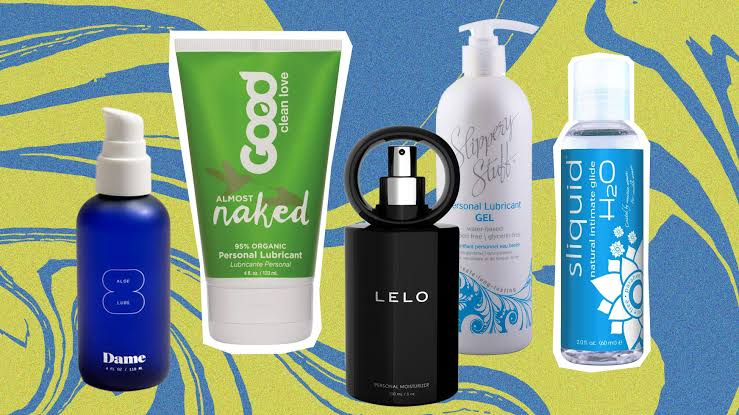
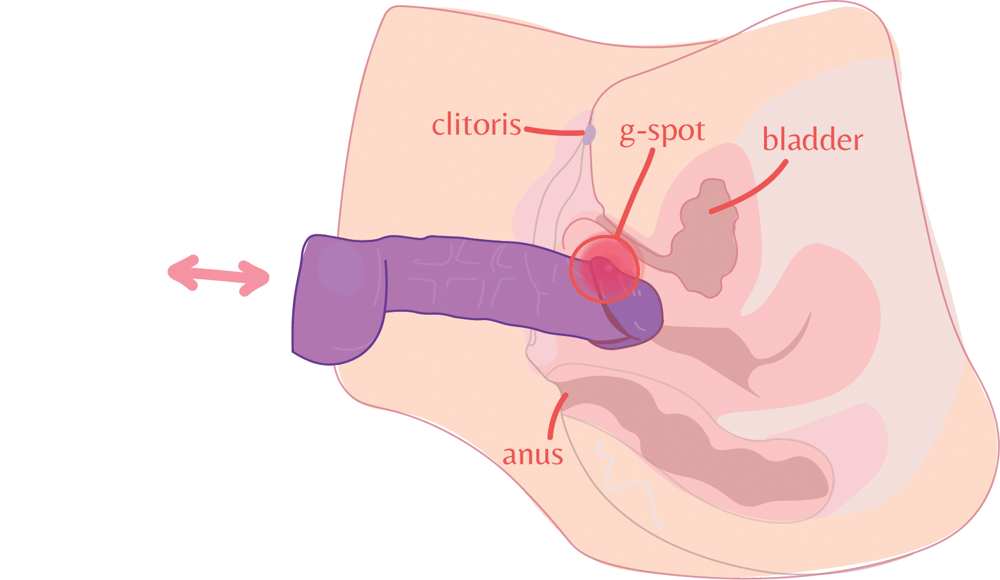
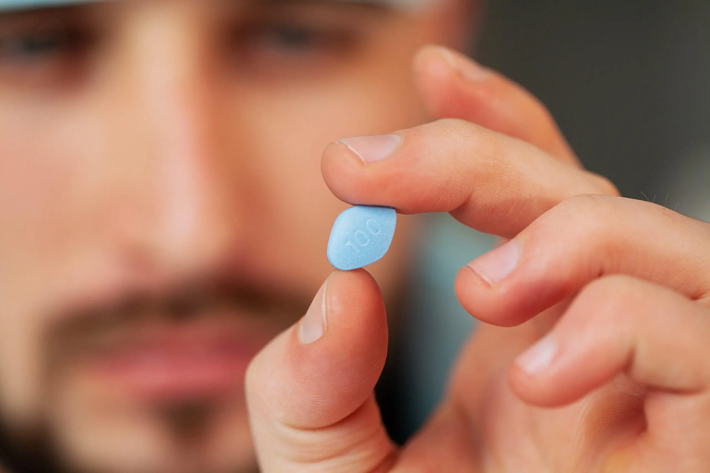
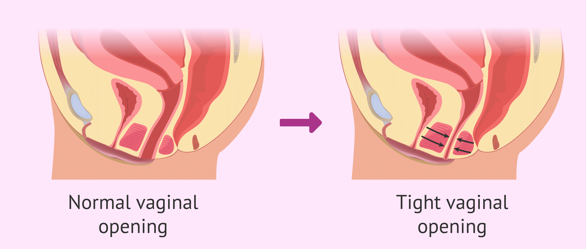

Sexual Behavior
An exploration of how people experience and express their sexuality — from solo to partnered, as well as orgasm, pleasure, and the difficulties that can come with sex.

Sexual behavior is how people experience and express their sexuality. It is one of the most universal human activities and also one of the most varied. What counts as sex, who does it, how often, and in what way — all of these shift across time, culture, age, and personal taste. For some, sex is purely procreativeProcreativeIntended to lead to pregnancy.View in glossary →, intended for the purposes of having a baby. For most people now, sex is more about pleasure and connection than getting pregnant. Sex can also be used as a way to relieve stress and express one's fantasies and individuality.
A note before we begin. This chapter describes behaviors in plain terms because that is the most useful way to learn about them. Naming things accurately is not the same as endorsing or recommending them, and nothing here is a prescription for what your own sex life should look like. The healthiest sexual behaviors are ones that are consensual, safe, and satisfying for all involved.
9.1 Masturbation
MasturbationMasturbationStimulation of one’s own genitals for pleasure.View in glossary → is the act of stimulating one's own genitals for pleasure. It is almost certainly the most common sexual behavior on the planet. People masturbate to feel good, relax, fall asleep, relieve stress, explore what their bodies respond to, and sometimes simply out of boredom or habit. Because it carries no risk of pregnancy or sexually transmitted infection, it is also the safest sex a person can have.
National surveys consistently find that most adults masturbate and that men report doing so more often than women. However, rates of masturbation among women have been steadily climbing as the stigma around it has lessened. In a recent national survey, about 78% of men and 40% of women reported masturbating in the previous month (Fischer et al., 2025)ReferenceFischer, N., Kozák, M., Graham, C. A., Clifton, S., Mercer, C. H., & Mitchell, K. R. (2025). Trends in masturbation prevalence and associated factors: Findings from the British National Surveys of Sexual Attitudes and Lifestyles. The Journal of Sex Research. Advance online publication.. These percentages are similar across the lifespan, from adolescence into old age (Herbenick et al., 2010)ReferenceHerbenick, D., Reece, M., Schick, V., Sanders, S. A., Dodge, B., & Fortenberry, J. D. (2010). Sexual behavior in the United States: Results from a national probability sample of men and women ages 14–94. The Journal of Sexual Medicine, 7(Suppl. 5), 255–265..
How People Masturbate
There is no single correct technique, and most people refine their own through trial and error. That said, some patterns are common across humans.
Men typically masturbate by wrapping the fingers around the shaft of the penis and stroking up and down, with much of the sensation concentrated at the glansGlansThe highly sensitive head of the penis (or, in women, the external tip of the clitoris).View in glossary →, the highly sensitive head of the penis. Men who are uncircumcised can use the movement of the foreskinForeskinThe retractable fold of skin covering the glans of the penis in uncircumcised men.View in glossary → to stimulate the glans, while circumcised men more often use a lubricant to reduce friction. Because the glans is so sensitive, focusing stimulation there tends to bring orgasm on quickly, whereas shifting attention to the shaft can slow things down. Some men use this deliberately as a way to build control and last longer during partnered sex.
.gif)
Women's masturbation tends to center on the clitorisClitorisThe small, densely nerve-rich organ at the top of the vulva whose only known function is sexual pleasure; the source of most women’s orgasms.View in glossary →, the small, densely nerve-packed organ at the top of the vulva. Many women work from the outside in, beginning with broad, indirect touch around the vulva and clitoral hood and moving toward more direct clitoral stimulation as arousal builds. For many women, the clitoris can feel almost too sensitive when touched directly early on, but becomes more pleasurable to touch at higher levels of arousal. Common techniques include rubbing or circling the clitoris with the fingers, varying speed and pressure, and adding vaginal stimulation. Vibrators are widely used, and we'll return to them later in the chapter.

Shifting Attitudes Toward Masturbation
Given how common and harmless masturbation is, the historical reaction to it looks bizarre in hindsight. For much of the eighteenth and nineteenth centuries, Western medicine treated "self-abuse," as masturbation was called, as a genuine disease that could cause blindness, insanity, acne, infertility, and a long list of other ailments. The panic shaped daily life in ways that still echo today. The breakfast cereals invented by Dr. John Harvey Kellogg and the crackers named for Sylvester Graham were both promoted as bland foods meant to dampen sexual urges and discourage the habit (Lewis, 2012)ReferenceLewis, D. (2012). The curious history of Graham crackers and corn flakes. Now I Know..
Modern medicine takes the opposite view. Masturbation is now understood as a normal and healthy part of sexual life. It is linked to better sleep, lower stress, and relief from menstrual cramps, and it gives people a low-stakes way to learn what they enjoy, which tends to make partnered sex better (Csako et al., 2024; Lastella et al., 2019; Planned Parenthood, 2023; Rief & Wyser, 2021)ReferenceCsako, R., Borg, C., & Lancel, M. (2024). Exploring the role of masturbation as a coping strategy in women. Journal of Sex & Marital Therapy, 50(4), 412–427. | Lastella, M., O'Mullan, C., Paterson, J. L., & Reynolds, A. C. (2019). Sex and sleep: Perceptions of sex as a sleep promoting behavior in the general adult population. Frontiers in Public Health, 7, Article 33. | Planned Parenthood. (2023). Six reasons masturbation is good for you. | Rief, J., & Wyser, L. (2021). The Menstrubation study: Can masturbation help with menstruation pain? Womanizer & Lunette Clinical Report.. It is also not just for single people. Plenty of people in happy, sexually active relationships masturbate, and doing so is not a sign that anything is wrong. The lingering shame around the behavior is a leftover from a much older and far less accurate way of thinking about sex.
9.2 Oral Sex
Oral sexOral sexUse of the mouth, lips, and tongue to stimulate a partner’s genitals.View in glossary → is the use of the mouth, lips, and tongue to stimulate a partner's genitals. It has a few specific names depending on the anatomy involved. CunnilingusCunnilingusOral stimulation of the vulva and clitoris.View in glossary → is oral stimulation of the vulva and clitoris. FellatioFellatioOral stimulation of the penis.View in glossary → is oral stimulation of the penis. AnilingusAnilingusOral stimulation of the anus, sometimes called rimming.View in glossary →, sometimes called rimming, is oral stimulation of the anus. Oral sex can be a warm-up to other activities, the main event, or an end in itself.
It is also extremely common. In national U.S. data, the large majority of adults report having given and received oral sex at some point in their lives, and more than half of women and men between 18 and 49 report doing so in a given year (Herbenick et al., 2010)ReferenceHerbenick, D., Reece, M., Schick, V., Sanders, S. A., Dodge, B., & Fortenberry, J. D. (2010). Sexual behavior in the United States: Results from a national probability sample of men and women ages 14–94. The Journal of Sexual Medicine, 7(Suppl. 5), 255–265.. One survey found that about 59% of Americans under 30, and roughly 84% of those 30 and older, had received oral sex at some point (Herbenick et al., 2010)ReferenceHerbenick, D., Reece, M., Schick, V., Sanders, S. A., Dodge, B., & Fortenberry, J. D. (2010). Sexual behavior in the United States: Results from a national probability sample of men and women ages 14–94. The Journal of Sexual Medicine, 7(Suppl. 5), 255–265.. In short, oral sex is about as mainstream a behavior as one can get.
The basic techniques are straightforward, though doing them well depends far more on attention and communication than on any secret move. In cunnilingus, a partner uses the tongue and lips to stimulate the clitoris and the surrounding labia, often with a steady, consistent rhythm, since erratic changes in pace tend to interrupt arousal as it builds. In fellatio, a partner uses the lips and tongue on the glans and shaft of the penis, where the glans and the underside near the head are most sensitive. In both cases, the person on the receiving end is the best available guide, and a quick word about what feels good is worth more than any amount of guessing.

In heterosexual encounters, fellatio tends to happen more often than cunnilingus, meaning women, on average, receive oral sex less often than they give it. That imbalance matters, because cunnilingus is one of the most reliable ways to bring women to orgasm. In a study of more than 50,000 adults, women were far more likely to reach orgasm in encounters that included oral sex along with other forms of stimulation than in encounters built around intercourse alone (Frederick et al., 2018)ReferenceFrederick, D. A., St. John, H. K., Garcia, J. R., & Lloyd, E. A. (2018). Differences in orgasm frequency among gay, lesbian, bisexual, and heterosexual men and women in a U.S. national sample. Archives of Sexual Behavior, 47(1), 273–288..
9.3 Coitus and Sexual Positions
CoitusCoitusPenile-vaginal intercourse, also abbreviated PIV.View in glossary →, also called penile-vaginal intercourse or PIV, involves the insertion of the penis into the vagina. It is the behavior most people picture when they hear the word "sex." It is worth remembering, though, that it is one item on a long list of sex acts, and that plenty of satisfying sex involves no coitus at all.
A quick note on names. Sex positions tend to have two sets of labels: clinical ones, like "receiving partner on top," and the everyday names people actually use, like "cowgirl." This book uses the everyday names because they are the ones you will hear in real life. Just keep in mind that the names are about bodies and angles, not about who is doing what. The "person on top" in the cowgirl position can be a woman, a man, or a person who is trans or non-binary. The receiving partner in any position can be of any gender, and every position described below works for same-sex couples as readily as for different-sex couples. Below, we'll discuss the 4 most common sex positions.
MissionaryMissionaryA face-to-face sexual position with the receiving partner on their back, emphasizing intimacy.View in glossary → places the receiving partner on their back with the penetrating partner facing them from above. Its great advantage is intimacy. The face-to-face arrangement makes eye contact, kissing, and talking easy, and it leaves hands free to stimulate the clitoris, nipples, and other areas. The main drawbacks are that it gives the partner on the bottom relatively little control over depth and pace. The angle of penetration does not provide much direct clitoral contact on its own, so it's best to also utilize direct clitoral stimulation (with fingers or toys).
CowgirlCowgirlA sexual position in which the receiving partner is on top, giving them control over depth, angle, and pace.View in glossary →, sometimes called cowboy or rider, reverses this, with the receiving partner on top. This position hands control of depth, angle, speed, and rhythm to the partner on top. This is helpful for the top-partner's pleasure. When people can steer their own stimulation, they tend to reach orgasm more reliably. Either partner can easily reach the clitoris, and the position generally allows the penetrating partner to last longer. The main downside is physical effort, since the partner on top carries the work and may tire in the hips and thighs.
DoggystyleDoggystyleA rear-entry sexual position with the receiving partner on hands and knees, allowing deep penetration.View in glossary → has the penetrating partner enter from behind while the receiving partner is on hands and knees. It allows deeper penetration and lets the receiving partner adjust depth by tilting the pelvis. The trade-offs are that the clitoris is harder to reach for direct stimulation. The doggystyle position is the favorite of many, given that it provides the penetrating partner a great view!
SpooningSpooningA low-effort, side-by-side sexual position, often rear-entry, valued for comfort.View in glossary → has both partners lying on their sides, usually with the penetrating partner behind, fitted together like two spoons in a drawer. Its main virtue is comfort. It takes little effort, reduces strain and fatigue, and works well during pregnancy. It's also a great position for couples who have limited mobility and for older couples who may have joint pain or fatigue easily. In the rear-entry version, the clitoris is easy to reach. The cost of all that ease is leverage: neither partner has much room to control depth or pace.
If this seems like a short list, that is by design. Magazines love to publish catalogs of fifty or more positions, but most people return again and again to a small handful of comfortable favorites. Of course, there are plenty of variations based on these four positions above. The useful insight is not memorizing an acrobatic repertoire. It is noticing how positions change the angle of stimulation, how easy it is to reach the clitoris, and the degree of intimacy felt during sex.
For a list of 56 different sex positions, check out this article.
9.4 Anal Sex
Anal sexAnal sexPenetration of the anus, usually by a penis, finger, or sex toy.View in glossary → refers to penetration of the anus by a finger, penis, or sex toy. Broader anal playAnal playSexual stimulation of the anus and surrounding area, including external touch and oral stimulation, not limited to penetration.View in glossary → also includes external stimulation, such as anilingus or touching around the opening. It is more common than many people assume. In nationally representative U.S. surveys, roughly a third of women report having tried penile-anal sex at some point in their lives, though far fewer do so regularly, with around 10% reporting it in the past year (Herbenick et al., 2010)ReferenceHerbenick, D., Reece, M., Schick, V., Sanders, S. A., Dodge, B., & Fortenberry, J. D. (2010). Sexual behavior in the United States: Results from a national probability sample of men and women ages 14–94. The Journal of Sexual Medicine, 7(Suppl. 5), 255–265..
People enjoy anal sex for both anatomical and emotional reasons. For men and others with a prostate, anal sex can be highly enjoyable. The prostateProstateA gland located against the front wall of the rectum in men; a source of sexual pleasure that can be stimulated through anal play.View in glossary → sits just inside the front wall of the rectum, and pressure on it through that wall is a reliable source of pleasure, sometimes intense enough to produce orgasm on its own. In one mapping study, about 39% of men reported being able to orgasm from receptive anal stimulation alone, compared with about 19% of women (Zaliznyak et al., 2025)ReferenceZaliznyak, M., Walton, A. B., Stelmar, J., Isaacson, D., Gaither, T. W., Knudson, G., & Garcia, M. M. (2025). Anal sex practices and rectal erogenous zone maps among men and women of diverse sexual orientations: An anatomic-map based questionnaire study. Sexual Medicine, 13(3), qfaf037.. For women, the pleasure tends to come from nearby structures, since the internal "legs" of the clitoris can run close to the rectum. This is why many women find anal stimulation most enjoyable when it is paired with clitoral stimulation. On top of physical pleasure, many couples are drawn to anal sex for reasons of intimacy, trust, and novelty, as well as the fact that it carries no risk of pregnancy.

Unlike the vagina, the anus does not produce its own lubrication, and the tissue lining the rectum is thin and tears easily. A few practices make anal sex both more comfortable and safer:
- Go slowly and start small. Beginning with a finger or a small toy lets the ring of muscle around the anus gradually relax.
- Use plenty of lubricant, and reapply. Because the area does not self-lubricate, generous lube is a must. It reduces friction, pain, and the risk of small tears.
- Pair it with other stimulation. Combining anal play with clitoral or penile stimulation makes the experience more pleasurable and helps the body associate anal stimulation with pleasure.
- Mind hygiene and infection risk. Some people clear the bowels or use a gentle anal douche beforehand for peace of mind, though this is optional. More importantly, the thin rectal lining makes anal sex the highest-risk sexual behavior for transmitting HIV and other infections. Condoms meaningfully lower that risk. Anything that has been in the anus, including a penis, finger, or toy, should be washed or re-covered with a new condom before it touches the vagina, since this is a common route for bacterial infection.
9.5 Sex Toys and Lubricants
People have always used props to enhance sex, and today the options range from the classics to the wildly inventive. Two categories cover most of what people actually use: lubricants and a small set of common toys.
Lubricants
A lubricantLubricantA slippery substance applied to the genitals to reduce friction; water- and silicone-based types are condom-safe, while oil-based types degrade latex.View in glossary →, or lube, is a slippery substance applied to the genitals to reduce friction during sex. It is the single most useful (and most underused) product in this entire section. While people often think lube is only for people who don't produce much natural lubrication on their own, adding lube to the mix is almost always a good idea. In one study, 85% of women who were randomly assigned to use lube during sex reported greater pleasure and comfort, compared to when they didn't use it (Herbenick et al., 2011)ReferenceHerbenick, D., Reece, M., Hensel, D., Sanders, S., Jozkowski, K., & Fortenberry, J. D. (2011). Association of lubricant use with women's sexual pleasure, sexual satisfaction, and genital symptoms: A prospective daily diary study. The Journal of Sexual Medicine, 8(1), 202–212.. Vaginal dryness is common among women of all ages (not just older women). It can be brought on by hormonal shifts, stress, dehydration, breastfeeding, certain medications, and hormonal birth control. Reaching for lube is a practical fix, not an admission of a problem.

Lubricants come in water-based, silicone-based, and oil-based varieties, and the type matters when condoms are involved. Oil-based lubricants, including lotions and petroleum jelly, break down latex and can cause a condom to fail. Only water-based and silicone-based lubricants are safe to use with condoms. When in doubt, water-based is the all-purpose choice.
Check out this article in Women's Health for the 13 best water-based sex lubes.
Sex Toys
A sex toySex toyAny device designed for sexual stimulation, alone or with a partner.View in glossary → is any device designed to be used for sexual stimulation, alone or with a partner. Below is a list of some of the most common ones.
- DildosDildoA firm, often phallic sex toy used for vaginal or anal penetration; may be handheld or attached to a harness as a strap-on.View in glossary → are firm, often phallic objects used to penetrate the vagina or anus. They can be handheld or attached to a harness as a strap-onStrap-onA dildo attached to a harness, allowing a partner of any gender to provide penetration.View in glossary →, which lets a partner of any gender provide penetration. Strap-ons are used by couples of all kinds, including partners where one cannot reliably maintain an erection.
- Butt plugsButt plugA tapered anal sex toy with a flared base, designed to be inserted and held in place.View in glossary → are tapered toys designed to be inserted into the anus and held in place. The single most important feature of any anal toy is a flared baseFlared baseThe wide stopper at the bottom of an anal toy that prevents it from being pulled into the body.View in glossary →, the wide stopper at the bottom. Unlike the vagina, the rectum can draw objects upward and inward, so a flared base is what keeps a toy from getting pulled in and lost, which is a genuine and very preventable trip to the emergency room.
- VibratorsVibratorA sex toy that delivers vibration for stimulation; the most popular sex toy.View in glossary → are devices that deliver vibration for stimulation, most often of the clitoris but also internally or on the penis. They are the most popular sex toy by a wide margin. About half of American women report having used one, and far from being a problem, vibrator use is associated with better sexual function across the board, including desire, arousal, and ease of orgasm (Herbenick et al., 2009)ReferenceHerbenick, D., Reece, M., Sanders, S., Dodge, B., Ghassemi, A., & Fortenberry, J. D. (2009). Prevalence and characteristics of vibrator use by women in the United States: Results from a nationally representative study. The Journal of Sexual Medicine, 6(7), 1857–1866.. They do not "ruin" sensitivity or replace partners, two common worries that the research does not support.
- Pocket vaginasPocket vaginaA soft, hollow masturbation toy designed for use on the penis; also called a masturbator sleeve.View in glossary →, also called masturbator sleeves, are soft, hollow toys designed to be used on the penis during masturbation. They are essentially the mirror image of a dildo, and come in a range of textures and shapes.
- Cock ringsCock ringA ring worn around the base of the penis to help maintain an erection, sometimes including a vibrator to stimulate a partner.View in glossary → fit around the base of the penis to help maintain a firmer erection for longer, and some include a small attached vibrator to stimulate a partner's clitoris during intercourse.


9.6 Maximizing Pleasure
For many, the main goal of sex is pleasure — namely, orgasm. But what exactly is an orgasm? This nearly universal human experience is hard to describe, much less study scientifically. But our understanding of orgasm has grown as stigma around sex research has diminished. It's an important topic of study, especially given the "orgasm gap" between women and men.
What Happens During Orgasm
OrgasmOrgasmThe brief, intense peak of sexual arousal, centered on rhythmic pelvic muscle contractions.View in glossary → is the brief, intense peak of sexual arousal. It centers on a series of rhythmic muscle contractions in the pelvic floor, especially the pubococcygeus muscle. On average there are about 8 to 10 contractions, roughly 0.8 seconds apart, so a typical orgasm lasts a little under ten seconds. Although the contractions start in the genital area, the pleasure often radiates outward through the body. Breathing, heart rate, and blood pressure all peak at this moment. One striking finding is that when men and women are asked to describe orgasm in writing, their descriptions are nearly impossible to tell apart (Vance & Wagner, 1976)ReferenceVance, E. B., & Wagner, N. N. (1976). Written descriptions of orgasm: A study of sex differences. Archives of Sexual Behavior, 5(1), 87–98.. The subjective experience seems remarkably similar across sexes.

In men, orgasm is usually, though not always, accompanied by emission and then ejaculation, the release of semen through the urethra. Some women also release fluid during orgasm from the paraurethral glands. A long-running debate concerns whether orgasms from clitoral stimulation differ from those involving the G-spot. Masters and Johnson argued they were essentially the same, since both engage the same outer vaginal muscles. Later research complicated that view, finding that clitoral orgasms tend to be felt mainly in the clitoris while G-spot orgasms are more often felt throughout the body, with deeper blood flow in the vagina (Komisaruk et al., 2006; Jannini et al., 2014)ReferenceKomisaruk, B. R., Beyer-Flores, C., & Whipple, B. (2006). The science of orgasm. Johns Hopkins University Press. | Jannini, E. A., Buisson, O., & Rubio-Casillas, A. (2014). Beyond the G-spot: Clitourethrovaginal complex anatomy in female orgasm. Nature Reviews Urology, 11, 531–538.. And the clitoris and G-spot are not the only routes. Some people reach orgasm from stimulation of the nipples, lips, or other areas (Whipple et al., 1992; Komisaruk & Whipple, 2011)ReferenceWhipple, B., Ogden, G., & Komisaruk, B. R. (1992). Physiological correlates of imagery-induced orgasm in women. Archives of Sexual Behavior, 21, 121–133. | Komisaruk, B. R., & Whipple, B. (2011). Non-genital orgasms. Sexual and Relationship Therapy, 26(4), 356–372..

The brain at orgasm is a spectacle. Brain imaging shows that the regions lighting up during orgasm overlap with those activated in people who abuse heroin, including reward centers that run on dopamine (Komisaruk & Whipple, 2005; Komisaruk et al., 2004; Gabry, 2008)ReferenceKomisaruk, B. R., & Whipple, B. (2005). Functional MRI of the brain during orgasm in women. Annual Review of Sex Research, 16(1), 62–86. | Komisaruk, B. R., Whipple, B., Crawford, A., Grimes, S., Liu, W.-C., Kalnin, A., & Mosier, K. (2004). Brain activation during vaginocervical self-stimulation and orgasm in women with complete spinal cord injury: fMRI evidence of mediation by the vagus nerves. Brain Research, 1024(1–2), 77–88. | Gabry, K. E. (2008). The science of orgasm. JAMA, 299(6), 701–702.. At the same time, activity in the thinking parts of the brain quiets down. This fits the common experience of orgasm as a moment when the mind goes briefly blank. A surge of oxytocin, sometimes nicknamed the bonding hormone, helps drive the muscle contractions and is thought to encourage closeness with a partner afterward.

After orgasm comes resolution. The intense arousal or orgasm quickly gives way to a wave of relaxation. Blood pressure, heart rate, and breathing return to baseline. Erections subside and the swelling of vasocongestion fades, usually over the course of 15 minutes. In men who have ejaculated, there is typically a refractory periodRefractory periodThe recovery time after ejaculation during which another orgasm is difficult or impossible.View in glossary → during which another orgasm is impossible. However, women can quickly become aroused again and have "multiple" orgasms, with some women experiencing them in rapid succession (Gérard et al., 2021)ReferenceGérard, M., Berry, M., Shtarkshall, R. A., Amsel, R., & Binik, Y. M. (2021). Female multiple orgasm: An exploratory internet-based survey. The Journal of Sex Research, 58(2), 206–221.. There is no physical limit to the number of orgasms a woman can have in one session. Several case studies have been written about women who can have dozens of orgasms in a single sitting (Masters & Johnson, 1966; Sherfey, 1972)ReferenceMasters, W. H., & Johnson, V. E. (1966). Human sexual response. Little, Brown. | Sherfey, M. J. (1972). The nature and evolution of female sexuality. Random House..
The phases described above are typical, but they are not a script everyone follows. There is enormous variation in how individuals move through the cycle. Some people repeat phases, some skip them, and the time spent in each phase differs widely. One person might move smoothly from excitement to a single orgasm and into resolution. Another might experience waves of rising and dipping arousal before climax, or reach a plateau of high arousal without orgasm at all, then return slowly to baseline. None of these patterns is more correct than the others. They are simply different, and all are normal.
The Orgasm Gap
In the orgasm literature, there has been one consistent gender difference, which is often referred to as the orgasm gapOrgasm gapThe well-documented pattern in which men reach orgasm far more often than women during heterosexual sex, driven largely by behavior and cultural scripts rather than anatomy.View in glossary →. In heterosexual sex, men reach orgasm more often than women. In a U.S. national survey of more than 50,000 adults, about 95% of heterosexual men reported usually or always reaching orgasm during partnered sex, compared with only about 65% of heterosexual women (Frederick et al., 2018)ReferenceFrederick, D. A., St. John, H. K., Garcia, J. R., & Lloyd, E. A. (2018). Differences in orgasm frequency among gay, lesbian, bisexual, and heterosexual men and women in a U.S. national sample. Archives of Sexual Behavior, 47(1), 273–288.. That same study also revealed that this gap doesn't apply to all women equally. Lesbian women reported orgasming about 86% of the time, far closer to the men's rate than to the rate for heterosexual women. That single comparison undoes the old assumption that women's bodies are simply harder to satisfy. If the gap were a matter of anatomy, it would not nearly vanish the moment the partner is another woman. The body is not the problem. What happens during sex is.

The main culprit is a cultural script that treats penile-vaginal intercourse as the main event and everything else as "foreplay." That script suits the penis, which receives direct, rhythmic stimulation during intercourse. However, it doesn't serve the clitoris, because the clitoris usually gets very little stimulation from penile penetration alone. Indeed, studies show that women are far more likely to orgasm during PIV when they also receive direct clitoral stimulation from hands or toys (Wetzel & Sanchez, 2021)ReferenceWetzel, G. M., & Sanchez, D. T. (2021). Heterosexual women's most reliable route to orgasm during partnered sex versus masturbation. JSM Sexual Medicine, 5(2), 1–6.. In fact, only 18% of women report that PIV alone is sufficient for them to achieve orgasm (Herbenick et al., 2018)ReferenceHerbenick, D., Fu, T.-C. J., Arter, J., Sanders, S. A., & Dodge, B. (2018). Women's experiences with genital touching, sexual pleasure, and orgasm: Results from a U.S. probability sample of women ages 18 to 94. Journal of Sex & Marital Therapy, 44(2), 201–212..
The orgasm gap is reinforced by several psychological and cultural factors as well. Sex education and media rarely mention the clitoris, so many people of all genders simply know less about it compared to the penis. In porn, direct clitoral stimulation is rarely shown during PIV, as this would "block the shot," not allowing the viewer to see penetration. Furthermore, women often prioritize their partner's orgasm over their own (Nicolson & Burr, 2003)ReferenceNicolson, P., & Burr, J. (2003). What is "normal" about women's (hetero)sexual desire and orgasm? A report of an in-depth interview study. Social Science & Medicine, 57(9), 1735–1745.. One study found that only 20% of women rated their own orgasm as "very important," while 60% rated their partner's orgasm as "very important" (Kontula & Miettinen, 2016)ReferenceKontula, O., & Miettinen, A. (2016). Determinants of female sexual orgasms. Socioaffective Neuroscience & Psychology, 6, 31624.. Popular culture and porn portray sex as an act primarily done to please men. After all, when does a porn video end? Is it when the woman climaxes? No, most often it's right after the man climaxes, commonly called the "money shot." These norms quietly write the woman's orgasm out of the script.
Closing the Orgasm Gap
The good news follows directly from the bad news. Because the gap is mostly about behavior and belief rather than biology, it is largely fixable. Women are far more likely to orgasm when their sex lives include a wider range of acts, especially ones that stimulate the clitoris (Frederick et al., 2018)ReferenceFrederick, D. A., St. John, H. K., Garcia, J. R., & Lloyd, E. A. (2018). Differences in orgasm frequency among gay, lesbian, bisexual, and heterosexual men and women in a U.S. national sample. Archives of Sexual Behavior, 47(1), 273–288.. Below is a list of strategies for closing this gap.
- Center on clitoral stimulation, not just penetration. Oral sex, manual stimulation, vibrators, and intercourse positions that allow the clitoris to be touched all raise the odds of orgasm dramatically. Intercourse and clitoral stimulation are not competitors; they work best together.
- Take your time. Longer encounters that include a mix of behaviors reliably help women achieve orgasm. A combination of deep kissing, manual genital stimulation, and oral sex outperforms any single act.
- Learn your own body first. Women who masturbate and discover what works for them are more likely to orgasm with a partner, because they can recognize and ask for the type of stimulation they need.
- Talk about it. Telling a partner what feels good and treating the woman's orgasm as a shared goal rather than an optional bonus can greatly reduce the gap. Women can take ownership of their orgasm and help direct their partner on what they like.
- Drop the finish-line script. Sex does not have to be a single act that ends when one person climaxes. Partners can take turns, with one person's orgasm through oral or manual stimulation coming before or after intercourse, rather than being squeezed out by it.

One important caveat is that orgasm is not the only measure of good sex. Treating it as a mandatory finish line can create performance pressure that actually makes it harder to reach. Plenty of satisfying, intimate sex involves no orgasm at all. The point of naming the orgasm gap is not to add one more thing to worry about. It is to retire the false idea that some bodies just cannot experience pleasure. A more helpful (and accurate) view to hold is that pleasure is a skill, and skills can be learned.
9.7 When Sex Is Difficult
Up to this point, the chapter has mostly described sex working the way people hope it will. That's not always the case. Sexual difficulties occur for most people at some point in their lives. Some are temporary, caused by an off night, a stressful week, or simply having a new partner. A difficulty can rise to the level of a sexual disorder if the problem is persistent and causes real distress in the bedroom. Thankfully, even serious sexual disorders are usually treatable using a combination of medicine, counseling, and simple education. This section covers 4 of the most common difficulties: 2 that show up most often in men and 2 that show up most often in women. Often, people don't discuss these issues or seek help out of a sense of shame or hopelessness. This mindset presents one of the main obstacles to treatment. Hopefully, after reviewing this section, you will be better equipped to be proactive when sexual problems arise.
Common Difficulties for Men
Premature ejaculation (PE)Premature ejaculation (PE)Ejaculation that consistently happens sooner than wanted, with little control, in a way that causes distress.View in glossary → is the most common sexual difficulty in men, especially in men under 40. It refers to ejaculation that consistently happens sooner than a person wants, with little control over the timing. Clinicians often mark it as ejaculation happening within one minute of penetration. Around 30% of men experience this issue at some point in their lives (Laumann et al., 1999)ReferenceLaumann, E. O., Paik, A., & Rosen, R. C. (1999). Sexual dysfunction in the United States: Prevalence and predictors. JAMA, 281(6), 537–544.. The causes are often psychological, including anxiety, overarousal, and the heightened excitement of a new partner.

The good news is that PE responds well to behavioral training. One of the most common training methods is called edgingEdgingA behavioral technique for delaying orgasm in which stimulation is brought near the point of climax, then stopped and resumed, to build ejaculatory control.View in glossary →, in which the man masturbates or has sex close to the point of orgasm, but then stops stimulation until the urge or ejaculate has gone away. Then they start again, going near to the point of orgasm, and then backing off. This technique is continued until a set amount of time has passed, such as waiting 10 minutes to allow oneself to orgasm. This technique eventually trains the body and brain to delay orgasm during sex.
Certain antidepressants in the SSRI family can also be used to delay ejaculation (Raveendran & Agarwal, 2021)ReferenceRaveendran, A. V., & Agarwal, A. (2021). Premature ejaculation — Current concepts in the management: A narrative review. International Journal of Reproductive BioMedicine, 19(1), 5–22.. A common side-effect of antidepressants is delayed orgasm, so this is really just taking advantage of a reliable byproduct of taking the medication. The only difference is that SSRI meds prescribed for premature ejaculation are only taken on days a guy expects to have sex (rather than every day). There are also numbing sprays, gels, and creams that can be applied to the penis 10 to 15 minutes before sex. These help to reduce sensation, which delays ejaculation. When using these products, make sure to fully wash off the agent before having sex, or it could reduce pleasure for the partner as well.
Erectile dysfunction (ED)Erectile dysfunction (ED)The recurring inability to get or keep an erection firm enough for satisfying sex.View in glossary → is the recurring inability to get or keep an erection firm enough for satisfying sex. Unlike premature ejaculation, it becomes more common with age, rising from roughly 2% of men under 30 to nearly half of men over 70. In older men, ED more often has a physical basis, such as reduced blood flow, diabetes, or heart disease. In younger men, it is far more often psychological, driven by performance anxiety, stress, or simple nervousness. An occasional episode of ED is completely normal and not a sign of anything wrong, but if the issue persists beyond a few weeks, it might be time to seek treatment.

The most common treatments for ED are medications in the PDE-5 inhibitor family, such as Viagra and Cialis. These meds increase nitric oxide in the erectile tissues of the penis, which relaxes muscles and widens blood vessels, causing erection (Assured Pharmacy, 2015)ReferenceAssured Pharmacy. (2015, August 15). How does Viagra work? In-depth info.. The medication takes a while to kick in, so it's best to take it 30 to 60 minutes before having sex. Vacuum erection devices (VEDs) offer a non-drug route to treating ED (Burnett et al., 2018)ReferenceBurnett, A. L., Nehra, A., Breau, R. H., Culkin, D. J., Faraday, M. M., Hakim, L. S., Heidelbaugh, J., Khera, M., McVary, K. T., Miner, M. M., Nelson, C. J., Sadeghi-Nejad, H., Seftel, A. D., & Shindel, A. W. (2018). Erectile dysfunction: AUA guideline. Journal of Urology, 200(3), 633–641.. These devices generate suction on the penis, which draws blood in. Once firm, a tension ring can be slid onto the base of the penis, which traps the blood inside. This technique works for 60 to 90% of men.

Common Difficulties for Women

Many women experience sex and vaginal penetration as uncomfortable or downright painful. Clinicians call this dyspareuniaDyspareuniaRecurrent or persistent genital pain during sex.View in glossary →, which is recurrent genital pain during sex. It's estimated that 10 to 20% of women experience this at some point, with rates being higher among younger women who are newer to sexual activity (Landry & Bergeron, 2009; Seehusen et al., 2014)ReferenceLandry, T., & Bergeron, S. (2009). How young does vulvo-vaginal pain begin? Prevalence and characteristics of dyspareunia in adolescents. The Journal of Sexual Medicine, 6(4), 927–935. | Seehusen, D. A., Baird, D. C., & Bode, D. V. (2014). Dyspareunia in women. American Family Physician, 90(7), 465–470.. Painful sex is never something a person is simply supposed to endure. Pain during sex is something that should be taken seriously and treated.
Many women who experience pain during sex are suffering from vaginismusVaginismusInvoluntary tightening of the muscles around the vaginal opening that interferes with or prevents penetration.View in glossary →, which is an involuntary tightening of the muscles around the vaginal opening. Sometimes, this tightening is so severe that penetration becomes impossible. Vaginismus is frequently tied to anxiety, fear, or past traumatic experiences around vaginal penetration. While it commonly has a psychological cause, this doesn't mean that a woman with vaginismus can just will herself to relax these muscles. The vaginal muscles being tightened are beyond conscious control, even in women without this condition.

Vaginismus and other cases of dyspareunia respond to both counseling and physical treatments. Counseling often involves processing past traumatic events, dispelling myths about the body (e.g., that sex should be painful), and building trust with sexual partners. Physical treatments can involve using lubricants, pelvic floor physical therapy, and the use of vaginal dilators. Dilators look like dildos but vary gradually in size, from very small to the size of an average penis. By starting with the smallest size that's comfortable, dilators can be placed inside the vagina throughout the day, which allows the body to become more comfortable with penetration. The size of the dilator can be increased slowly, over the course of days or weeks, until the vagina can be penetrated with a dildo the size of a penis without pain. Throughout this process, it's important for women to be open and honest with their partner about their pain. Hiding discomfort or simply "muscling through" the pain often worsens the condition.

Low sexual desire is the most common sexual difficulty reported by women, accounting for around 65% of sexual dysfunction in women (Ponce et al., 2025)ReferencePonce, S., Ajabshir, D., Muñoz, N., & Yih, J. (2025). Prevalence and clinical considerations of hypoactive sexual desire disorder: A narrative review. The Journal of Sexual Medicine, 22(Supplement 4), qdaf320.376.. Men can experience low desire as well, but rates are far lower. When a persistent lack of interest in sex causes a person genuine distress, clinicians call it hypoactive sexual desire disorder (HSDD)Hypoactive sexual desire disorder (HSDD)Persistent, distressing low sexual desire; the most common sexual difficulty reported by women.View in glossary →. It's estimated that around 20 to 30% of women experience HSDD at some point in their lives, while rates are less than 5% among men (Rosen, 2000)ReferenceRosen, R. C. (2000). Prevalence and risk factors of sexual dysfunction in men and women. Current Psychiatry Reports, 2(3), 189–195.. In any given year, about 10% of women experience this disorder (Parish & Hahn, 2016)ReferenceParish, S. J., & Hahn, S. R. (2016). Hypoactive sexual desire disorder: A review of epidemiology, biopsychology, diagnosis, and treatment. Sexual Medicine Reviews, 4(2), 103–120..
Similar to the causes of the orgasm gap, the causes of HSDD are more psychological than physical. Common culprits are stress, fatigue, relationship conflict, depression, hormonal shifts, and side effects from common medications (especially antidepressants). This makes treating HSDD tricky, as it can be difficult to distinguish between these different causes when deciding on a treatment. The most common treatments for HSDD are hormone therapies, such as estrogen and testosterone treatments, and medications specifically designed for HSDD (Rowen et al., 2026)ReferenceRowen, T. S., Abdo, C., el Kak, F., Maseroli, E., Pope, R., Prasad, P., Velten, J., & Vignozzi, L. (2026). Evaluation and management of hypoactive sexual desire disorder in women: Recommendations from the 5th International Consultation on Sexual Medicine (ICSM 2024). Sexual Medicine Reviews, 14(1), qeaf057.. One of the most commonly prescribed medications for HSDD is Addyi, which regulates dopamine and norepinephrine, which are believed to spark desire, while lowering serotonin, which tends to inhibit sexual response. HSDD has also been shown to respond well to counseling, particularly cognitive behavioral therapy and mindfulness therapies. These techniques can help people manage the negative thoughts and anxiety that can sometimes cause HSDD. Sex and couples therapists can also help couples address expectations and communication around sex.
Study Guide
After reading this chapter, you should be able to answer the following questions. They are organized by section and range from recall to application.
9.1 Masturbation
- What does national survey data show about how common masturbation is among adults, and why might reported rates be lower for women than for men?
- Describe the historical “self-abuse” panic and give one example of its lasting cultural footprint.
9.2 Oral Sex
- Define cunnilingus, fellatio, and anilingus.
- Explain how the imbalance between fellatio and cunnilingus in heterosexual encounters connects to the orgasm gap.
9.3 Coitus and Sexual Positions
- Compare the missionary and cowgirl positions in terms of who controls depth and pace, and explain why that control matters for orgasm.
- Why does the chapter argue that sexual position labels are “about bodies and angles, not identities”? Give an example.
9.4 Anal Sex
- Explain the anatomical reasons that men and women may find anal stimulation pleasurable.
- List three practices that make anal sex safer and more comfortable, and explain why lubricant is non-negotiable for it.
9.5 Sex Toys and Lubricants
- Why are only water- and silicone-based lubricants safe to use with latex condoms?
- What is the single most important safety feature of an anal toy, and why?
9.6 Maximizing Pleasure
- About how long does a typical orgasm last, and which muscle primarily drives the contractions?
- What is the refractory period, and why can many women have multiple orgasms while men typically cannot?
- What is the orgasm gap, and what evidence shows it is driven by behavior rather than anatomy?
- Roughly what percentage of heterosexual men versus heterosexual women usually or always orgasm during partnered sex, and what single comparison from the same study shows the gap is not mainly about anatomy?
- Identify three research-supported strategies for closing the orgasm gap.
9.7 When Sex Is Difficult
- What two features distinguish a passing sexual difficulty from a sexual disorder?
- Contrast the typical causes of erectile dysfunction in younger versus older men.
- Define dyspareunia and vaginismus, and name two treatments that can apply.
Key Terms
- Anal play
- Sexual stimulation of the anus and surrounding area, including external touch and oral stimulation, not limited to penetration.
- Anal sex
- Penetration of the anus, usually by a penis, finger, or sex toy.
- Anilingus
- Oral stimulation of the anus, sometimes called rimming.
- Aphrodisiac
- A food or substance believed to increase sexual desire or performance, though most reputed aphrodisiacs lack strong scientific support and work mainly through expectation.
- Butt plug
- A tapered anal sex toy with a flared base, designed to be inserted and held in place.
- Clitoris
- The small, densely nerve-rich organ at the top of the vulva whose only known function is sexual pleasure; the source of most women’s orgasms.
- Cock ring
- A ring worn around the base of the penis to help maintain an erection, sometimes including a vibrator to stimulate a partner.
- Coitus
- Penile-vaginal intercourse, also abbreviated PIV.
- Cowgirl
- A sexual position in which the receiving partner is on top, giving them control over depth, angle, and pace.
- Cunnilingus
- Oral stimulation of the vulva and clitoris.
- Dildo
- A firm, often phallic sex toy used for vaginal or anal penetration; may be handheld or attached to a harness as a strap-on.
- Doggystyle
- A rear-entry sexual position with the receiving partner on hands and knees, allowing deep penetration.
- Dyspareunia
- Recurrent or persistent genital pain during sex.
- Edging
- A behavioral technique for delaying orgasm in which stimulation is brought near the point of climax, then stopped and resumed, to build ejaculatory control.
- Erectile dysfunction (ED)
- The recurring inability to get or keep an erection firm enough for satisfying sex.
- Fellatio
- Oral stimulation of the penis.
- Flared base
- The wide stopper at the bottom of an anal toy that prevents it from being pulled into the body.
- Foreskin
- The retractable fold of skin covering the glans of the penis in uncircumcised men.
- Glans
- The highly sensitive head of the penis (or, in women, the external tip of the clitoris).
- Hypoactive sexual desire disorder (HSDD)
- Persistent, distressing low sexual desire; the most common sexual difficulty reported by women.
- Lubricant
- A slippery substance applied to the genitals to reduce friction; water- and silicone-based types are condom-safe, while oil-based types degrade latex.
- Masturbation
- Stimulation of one’s own genitals for pleasure.
- Missionary
- A face-to-face sexual position with the receiving partner on their back, emphasizing intimacy.
- Oral sex
- Use of the mouth, lips, and tongue to stimulate a partner’s genitals.
- Orgasm
- The brief, intense peak of sexual arousal, centered on rhythmic pelvic muscle contractions.
- Orgasm gap
- The well-documented pattern in which men reach orgasm far more often than women during heterosexual sex, driven largely by behavior and cultural scripts rather than anatomy.
- Pocket vagina
- A soft, hollow masturbation toy designed for use on the penis; also called a masturbator sleeve.
- Premature ejaculation (PE)
- Ejaculation that consistently happens sooner than wanted, with little control, in a way that causes distress.
- Procreative
- Intended to lead to pregnancy.
- Prostate
- A gland located against the front wall of the rectum in men; a source of sexual pleasure that can be stimulated through anal play.
- Refractory period
- The recovery time after ejaculation during which another orgasm is difficult or impossible.
- Sex toy
- Any device designed for sexual stimulation, alone or with a partner.
- Spooning
- A low-effort, side-by-side sexual position, often rear-entry, valued for comfort.
- Strap-on
- A dildo attached to a harness, allowing a partner of any gender to provide penetration.
- Teledildonics
- Internet-connected sex toys that can be controlled remotely.
- Vaginismus
- Involuntary tightening of the muscles around the vaginal opening that interferes with or prevents penetration.
- Vibrator
- A sex toy that delivers vibration for stimulation; the most popular sex toy.
References
- Assured Pharmacy. (2015, August 15). How does Viagra work? In-depth info. https://www.assuredpharmacy.co.uk/blog/viagra/how-does-viagra-work-in-depth-info/
- Brindle, M., Ferguson-Gow, H., Williamson, J., Thomsen, R., & Sommer, V. (2023). The evolution of masturbation is associated with postcopulatory selection and pathogen avoidance in primates. Proceedings of the Royal Society B: Biological Sciences, 290(1999), 20230061. https://doi.org/10.1098/rspb.2023.0061
- Burnett, A. L., Nehra, A., Breau, R. H., Culkin, D. J., Faraday, M. M., Hakim, L. S., Heidelbaugh, J., Khera, M., McVary, K. T., Miner, M. M., Nelson, C. J., Sadeghi-Nejad, H., Seftel, A. D., & Shindel, A. W. (2018). Erectile dysfunction: AUA guideline. Journal of Urology, 200(3), 633–641. https://doi.org/10.1016/j.juro.2018.05.004
- Csako, R., Borg, C., & Lancel, M. (2024). Exploring the role of masturbation as a coping strategy in women. Journal of Sex & Marital Therapy, 50(4), 412–427. https://www.tandfonline.com/doi/full/10.1080/19317611.2024.2344812
- Fischer, N., Kozák, M., Graham, C. A., Clifton, S., Mercer, C. H., & Mitchell, K. R. (2025). Trends in masturbation prevalence and associated factors: Findings from the British National Surveys of Sexual Attitudes and Lifestyles. The Journal of Sex Research. Advance online publication. https://doi.org/10.1080/00224499.2025.2555053
- Frederick, D. A., St. John, H. K., Garcia, J. R., & Lloyd, E. A. (2018). Differences in orgasm frequency among gay, lesbian, bisexual, and heterosexual men and women in a U.S. national sample. Archives of Sexual Behavior, 47(1), 273–288. https://doi.org/10.1007/s10508-017-0939-z
- Gabry, K. E. (2008). The science of orgasm. JAMA, 299(6), 701–702. https://doi.org/10.1001/jama.299.6.701
- Gérard, M., Berry, M., Shtarkshall, R. A., Amsel, R., & Binik, Y. M. (2021). Female multiple orgasm: An exploratory internet-based survey. The Journal of Sex Research, 58(2), 206–221. https://doi.org/10.1080/00224499.2020.1743224
- Ghofrani, H. A., Osterloh, I. H., & Grimminger, F. (2006). Sildenafil: From angina to erectile dysfunction to pulmonary hypertension and beyond. Nature Reviews Drug Discovery, 5(8), 689–702. https://doi.org/10.1038/nrd2030
- Herbenick, D., Reece, M., Sanders, S., Dodge, B., Ghassemi, A., & Fortenberry, J. D. (2009). Prevalence and characteristics of vibrator use by women in the United States: Results from a nationally representative study. The Journal of Sexual Medicine, 6(7), 1857–1866. https://doi.org/10.1111/j.1743-6109.2009.01318.x
- Herbenick, D., Reece, M., Schick, V., Sanders, S. A., Dodge, B., & Fortenberry, J. D. (2010). Sexual behavior in the United States: Results from a national probability sample of men and women ages 14–94. The Journal of Sexual Medicine, 7(Suppl. 5), 255–265. https://doi.org/10.1111/j.1743-6109.2010.02012.x
- Herbenick, D., Reece, M., Hensel, D., Sanders, S., Jozkowski, K., & Fortenberry, J. D. (2011). Association of lubricant use with women's sexual pleasure, sexual satisfaction, and genital symptoms: A prospective daily diary study. The Journal of Sexual Medicine, 8(1), 202–212. https://doi.org/10.1111/j.1743-6109.2010.02067.x
- Herbenick, D., Fu, T.-C. J., Arter, J., Sanders, S. A., & Dodge, B. (2018). Women's experiences with genital touching, sexual pleasure, and orgasm: Results from a U.S. probability sample of women ages 18 to 94. Journal of Sex & Marital Therapy, 44(2), 201–212. https://doi.org/10.1080/0092623X.2017.1346530
- Jannini, E. A., Buisson, O., & Rubio-Casillas, A. (2014). Beyond the G-spot: Clitourethrovaginal complex anatomy in female orgasm. Nature Reviews Urology, 11, 531–538. https://doi.org/10.1038/nrurol.2014.193
- Komisaruk, B. R., Beyer-Flores, C., & Whipple, B. (2006). The science of orgasm. Johns Hopkins University Press.
- Komisaruk, B. R., & Whipple, B. (2005). Functional MRI of the brain during orgasm in women. Annual Review of Sex Research, 16(1), 62–86.
- Komisaruk, B. R., & Whipple, B. (2011). Non-genital orgasms. Sexual and Relationship Therapy, 26(4), 356–372. https://doi.org/10.1080/14681994.2011.649252
- Komisaruk, B. R., Whipple, B., Crawford, A., Grimes, S., Liu, W.-C., Kalnin, A., & Mosier, K. (2004). Brain activation during vaginocervical self-stimulation and orgasm in women with complete spinal cord injury: fMRI evidence of mediation by the vagus nerves. Brain Research, 1024(1–2), 77–88. https://doi.org/10.1016/j.brainres.2004.07.029
- Kontula, O., & Miettinen, A. (2016). Determinants of female sexual orgasms. Socioaffective Neuroscience & Psychology, 6, 31624. https://doi.org/10.3402/snp.v6.31624
- Landry, T., & Bergeron, S. (2009). How young does vulvo-vaginal pain begin? Prevalence and characteristics of dyspareunia in adolescents. The Journal of Sexual Medicine, 6(4), 927–935. https://doi.org/10.1111/j.1743-6109.2008.01166.x
- Lastella, M., O'Mullan, C., Paterson, J. L., & Reynolds, A. C. (2019). Sex and sleep: Perceptions of sex as a sleep promoting behavior in the general adult population. Frontiers in Public Health, 7, Article 33. https://doi.org/10.3389/fpubh.2019.00033
- Laumann, E. O., Paik, A., & Rosen, R. C. (1999). Sexual dysfunction in the United States: Prevalence and predictors. JAMA, 281(6), 537–544. https://doi.org/10.1001/jama.281.6.537
- Levitt, S. D., & Dubner, S. J. (2009). SuperFreakonomics: Global cooling, patriotic prostitutes, and why suicide bombers should buy life insurance. William Morrow.
- Lewis, D. (2012). The curious history of Graham crackers and corn flakes. Now I Know. https://nowiknow.com/the-curious-history-of-graham-crackers-and-corn-flakes/
- Masters, W. H., & Johnson, V. E. (1966). Human sexual response. Little, Brown.
- Nicolson, P., & Burr, J. (2003). What is "normal" about women's (hetero)sexual desire and orgasm? A report of an in-depth interview study. Social Science & Medicine, 57(9), 1735–1745. https://doi.org/10.1016/s0277-9536(03)00012-1
- Parish, S. J., & Hahn, S. R. (2016). Hypoactive sexual desire disorder: A review of epidemiology, biopsychology, diagnosis, and treatment. Sexual Medicine Reviews, 4(2), 103–120. https://doi.org/10.1016/j.sxmr.2015.11.009
- Planned Parenthood. (2023). Six reasons masturbation is good for you. https://www.plannedparenthood.org/blog/six-reasons-masturbation-is-good-for-you
- Ponce, S., Ajabshir, D., Muñoz, N., & Yih, J. (2025). Prevalence and clinical considerations of hypoactive sexual desire disorder: A narrative review. The Journal of Sexual Medicine, 22(Supplement 4), qdaf320.376. https://doi.org/10.1093/jsxmed/qdaf320.376
- Raveendran, A. V., & Agarwal, A. (2021). Premature ejaculation — Current concepts in the management: A narrative review. International Journal of Reproductive BioMedicine, 19(1), 5–22. https://doi.org/10.18502/ijrm.v19i1.8176
- Rief, J., & Wyser, L. (2021). The Menstrubation study: Can masturbation help with menstruation pain? Womanizer & Lunette Clinical Report. https://menstrubation.com/wp-content/uploads/2021/03/WMZ_Menstrubation-Results_Report_UK.pdf
- Rosen, R. C. (2000). Prevalence and risk factors of sexual dysfunction in men and women. Current Psychiatry Reports, 2(3), 189–195. https://doi.org/10.1007/s11920-996-0006-2
- Rowen, T. S., Abdo, C., el Kak, F., Maseroli, E., Pope, R., Prasad, P., Velten, J., & Vignozzi, L. (2026). Evaluation and management of hypoactive sexual desire disorder in women: Recommendations from the 5th International Consultation on Sexual Medicine (ICSM 2024). Sexual Medicine Reviews, 14(1), qeaf057. https://doi.org/10.1093/sxmrev/qeaf057
- Seehusen, D. A., Baird, D. C., & Bode, D. V. (2014). Dyspareunia in women. American Family Physician, 90(7), 465–470.
- Sherfey, M. J. (1972). The nature and evolution of female sexuality. Random House.
- Tong, Z. (2024, June 18). China's next-gen sexbots powered by AI about to hit the shelves. South China Morning Post. https://www.scmp.com/news/china/science/article/3266964/chinas-next-gen-sexbots-powered-ai-are-about-hit-shelves
- Uloko, M., Isabey, E. P., & Peters, B. R. (2023). How many nerve fibers innervate the human glans clitoris: A histomorphometric evaluation of the dorsal nerve of the clitoris. The Journal of Sexual Medicine, 20(3), 247–252. https://doi.org/10.1093/jsxmed/qdac027
- Vance, E. B., & Wagner, N. N. (1976). Written descriptions of orgasm: A study of sex differences. Archives of Sexual Behavior, 5(1), 87–98. https://doi.org/10.1007/BF01542242
- Wetzel, G. M., & Sanchez, D. T. (2021). Heterosexual women's most reliable route to orgasm during partnered sex versus masturbation. JSM Sexual Medicine, 5(2), 1–6. https://doi.org/10.47739/2578-3718/69
- Whipple, B., Ogden, G., & Komisaruk, B. R. (1992). Physiological correlates of imagery-induced orgasm in women. Archives of Sexual Behavior, 21, 121–133. https://doi.org/10.1007/BF01542589
- Zaliznyak, M., Walton, A. B., Stelmar, J., Isaacson, D., Gaither, T. W., Knudson, G., & Garcia, M. M. (2025). Anal sex practices and rectal erogenous zone maps among men and women of diverse sexual orientations: An anatomic-map based questionnaire study. Sexual Medicine, 13(3), qfaf037. https://doi.org/10.1093/sexmed/qfaf037